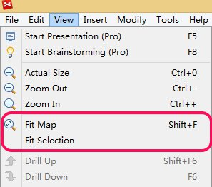

マップサイズを合わせる と 選択した部分のサイズを合わせる
この 2 つはマップ ナビゲーション中にとても便利な操作です。

マップサイズを合わせるを選択すると，XMind はエディター領域に合わせて、マップ全体をズーム表示させます。特に大きなマップの場合は、このオプションが一度だけ表示されます。
そして 選択した部分のサイズを合わせる は、選択されたトピックだけを、マップの編集領域に、ズームイン/ズームアウトして表示します。
ミーティング中、あるトピックに注目して欲しいときに、気に入っていただける機能だと思います。
こちらもご覧ください...
ヘルプ センター